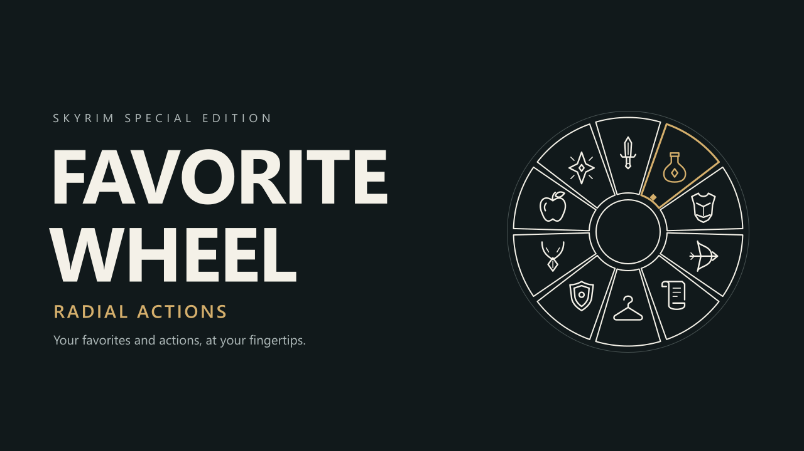

Replace Skyrim's Favorites menu with a categorized wheel for favorites or your full inventory. Access outfits and optional Face Lighting through a separate action wheel, with configurable time behavior, controller support, themes, and localization.
Favorite Wheel - Radial Actions
Your favorites and actions, at your fingertips.
Version 0.5.2
Replace Skyrim's Favorites menu with a categorized wheel for your items and spells. Switch to a separate action wheel for outfit presets and optional Face Lighting controls. Supports keyboard, mouse, and controller.
Features
- Favorites or full inventory — Browse eight categories with ten entries per page. Empty categories can be hidden; each wheel remembers its last category during the session.
- Item details — Hover to check available damage, armor, weight, value, spell cost, and effects.
- Pause or slow time — Choose paused gameplay, adjustable slow time, or normal speed.
- Outfit presets — Save, apply, rename, import, and export armor, clothing, and jewelry sets.
- Controller movement — Optionally move with the left stick while selecting with the right stick in Slow/Normal speed.
- Make it yours — Built-in settings, configurable bindings, four themes, wheel size and position, background dimming, sounds, and fan-style animations.
Install & get started
- SKSE64 and Address Library, both matching your game version.
- Microsoft Visual C++ 2015–2022 x64 Redistributable.
- Install the ZIP with your mod manager and launch through SKSE.
Mark items or spells as favorites, return to gameplay, and press Q. To show carried items instead, choose F2 → Gameplay → Item source → All inventory → Apply. Spells, shouts, and powers remain favorites only.
No ESP, Papyrus scripts, SkyUI, or SKSE Menu Framework required.
Controls
Keyboard & mouse
- Q / Shift + Q — Open favorites / actions. R switches between them.
- A / D — Change category. W / S or mouse wheel — Change page. Arrow keys also work.
- Mouse — Select an entry; return to the center to clear selection.
- Left click / Enter — Use or equip. Right click — Equip to the left hand where supported, or manage an outfit preset.
- 1–8 over a favorite — Assign a native quick slot; press the same number again to clear it. Save the game after changing bindings, then use the number during gameplay.
- F2 — Settings. Esc / Tab — Close or return.
Controller (Xbox button names)
- D-Pad Up / LB + D-Pad Up — Open favorites / actions. Y switches wheels.
- Left stick — Select. A / X — Use or equip right / equip left or manage a preset.
- LB / RB — Change category. LT / RT — Equip left / right, or use consumables and other entries.
- D-Pad Up / Down — Change page; release the opening button first.
- Start — Settings. B — Close or return.
Opening shortcuts follow your game's Favorites binding by default. Customize keys and modifiers in settings; controller category buttons can swap between LB/RB and LT/RT.
Gameplay & settings
Open F2 or controller Start for Appearance, Keyboard, Controller, and Gameplay settings. Apply saves changes; Cancel discards unsaved edits.
- Time behavior — Pause is the default. Slow time defaults to 20%, adjustable from 5–100%. Settings and outfit dialogs always pause; in live modes, you can still take damage.
- Keep open after equip — On by default for equipment, magic, and other actions. Potions, food, and outfit presets always close the wheel.
- Left stick movement — Off by default. Enable and Apply to move with the left stick and select with the right in Slow/Normal speed. Center the right stick after closing to restore camera control. Sprint buttons remain wheel controls.
- Appearance — Adjust size, position, and effects. New installations place the wheel on the right; existing positions are preserved.
Updates do not include the main FavoriteWheel.ini, preserving your saved settings. Without it, built-in defaults apply; the first successful Apply creates the file. MO2 users may find it in Overwrite or their configured output mod.
Outfit presets
Wear the outfit you want to save, open the action wheel, and choose SAVE CURRENT.
- Select a preset to change outfits. Shared pieces stay worn; new pieces equip before old leftovers are removed. Selecting an exact already worn outfit removes it.
- Right-click / X to rename, overwrite, delete, or export a preset.
- Weapons, shields, and ammunition are excluded. You must own the saved equipment. Applying or removing a preset closes the wheel.
- Save the game after editing presets. They belong to your character's SKSE co-save; keep the matching .skse file when transferring saves.
Import/export uses .fwo files in Data/SKSE/Plugins/FavoriteWheel/Outfits/Imports/ and Exports/. Imports require matching inventory items. Dynamic equipment cannot be exported. Missing or modified equipment may require recapturing the preset; other equipment mods can affect the change.
Compatibility & integrations
- Tested in-game: Skyrim 1.5.97 and 1.6.1170.
- Supported, not yet tested in-game: 1.6.640, GOG 1.6.1179, and 1.7.99 / 1.7.104.
- GOG: Use GOG SKSE64 2.2.6 and the 1179 Address Library. For 1.7, use matching SKSE64 and version-5 Address Library files.
Other runtimes and VR are unsupported. Disable competing Favorites-menu replacements.
Face Lighting SKSE — Optional player, targeted NPC, and follower controls through a compatible public API V1. The category is hidden without a compatible installation. Aim at an NPC before opening the wheel.
Skyrim Text Bridge — Optional IME support for preset names. Keyboard input and Unicode clipboard paste also work without it.
Ultimate Animated Potions NG and Eating Animations and Sounds SE worked in user testing.
Item details may differ for conditional or scripted effects. Books, ingredients, miscellaneous items, and poisons can be listed but cannot be directly used. Selecting magic equips it for normal casting. Beast forms use the original Favorites menu.
Themes & translations
Themes: Classic Gold, Frost, Engraved Gold, and Quiet Slate.
Languages: English, Simplified Chinese, French, Brazilian Portuguese, Russian, Japanese, Korean, and German.
System mode follows your Windows display language and falls back to English. Manual selection is also available. Japanese/Korean use installed system fonts automatically.
Thanks to Ardios for the French base translation; current-version additions are maintained by the project.
Want to translate? Copy Languages/en.ini, rename it to your locale, and translate the values while keeping the keys unchanged. Save as UTF-8 and restart. Missing text falls back to English. Themes can also be edited in SKSE/Plugins/FavoriteWheel/Themes/.
Translation guide · Resource guide
Source & feedback
Source code on GitHub — GPL-3.0. Modification and redistribution follow the license; third-party notices are included. Provided without warranty.
For bug reports, include your game/SKSE/mod versions, reproduction steps, and FavoriteWheel.log from Documents/My Games/Skyrim Special Edition/SKSE/. Include a crash log for crashes.
Thanks to the SKSE, CommonLibSSE-NG, Address Library, Dear ImGui, spdlog, DirectX contributors, and everyone helping test the mod.
Developed with AI assistance and hands-on testing. The cover is original vector artwork, not an in-game screenshot.